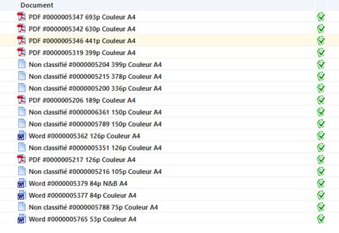
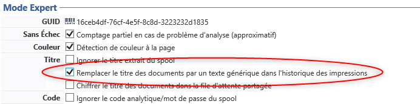
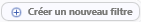

Oct. 2022
Contexte
Il arrive que, dans les bilans relatifs aux impressions, certains documents de la liste apparaissent avec la mention "non classifié".

Cause
Le problème survient quand Watchdoc n'est pas en mesure d'extraire l'extension du fichier à partir du spool et ne peut donc y associer une "application" reconnue.
Cette impossibilité peut venir de la configuration de la file d'impression : un paramètre permet en effet à Watchdoc de remplacer le titre des documents par un texte générique dans l'historique des impressions (configuration d'une File d'impression > section Mode Expert > paramètre Titre > Remplacer le titre des documents).

L'impossibilité peut aussi venir d'un problème d'interprétation du spool.
Résolution
Pour résoudre ce problème, il convient :
-
de désactiver le paramètre remplaçant le titre des documents dans la section Mode Expert de la file ;
- de créer une règle permettant à Watchdoc d'associer une extension aux travaux d'impression générés par une application inconnue ;
- de paramétrer un événement sur la file (ou les files) concernées par le problème, de sorte qu'elle puisse détecter l'application inconnue lorsque la règle est vérifiée et lui associer un nom d'application.
Configurer la règle
(cf. Filtres et règles pour plus d'informations).
-
depuis le Menu principal > section Configuration, cliquez sur Filtres.
-
dans l'interface Filtres, cliquez sur Créer une nouveau filtre

et attribuez-lui un nom ("Application [nom de l'application]", par exemple et, en message "filtre permettant de détecter les documents de type [nom de l'application]") -
configurez les règles permettant de discriminer les documents dont le type d'application est inconnu et donc l'extension correspond à celle que vous indiquez en paramètre :
Condition Paramètre Si vrai Si faux Le type de document est... unknown Continuer Rejeter Le titre du document contient... [extension du type d'application] Sélectionner Rejeter ou sinon Rejeter
Configurer la (ou les) files d'impression
-
depuis le Menu principal > section Exploitation > cliquez sur Files d'impression, groupes de files & pools ;
-
dans la liste des Files, sélectionnez la file sur laquelle doit s'appliquer la règle :
-
dans l'interface de conguration de la file, cliquez sur le bouton Règles ;
-
configurez l'événement : dans la section "Impression sécurisée", cliquez sur Editer ;
-
dans l'interface, configurez l'Evénements sur la file :
Filtre Action Paramètre Sélectionnez le filtre précédemment configuré [Application...] Fixer le type d'application à... "Application métier" ou indiquez le nom explicite de l'application.
-
Réitérez la configuration de l'événement sur toutes les files ou groupes de files concernés.